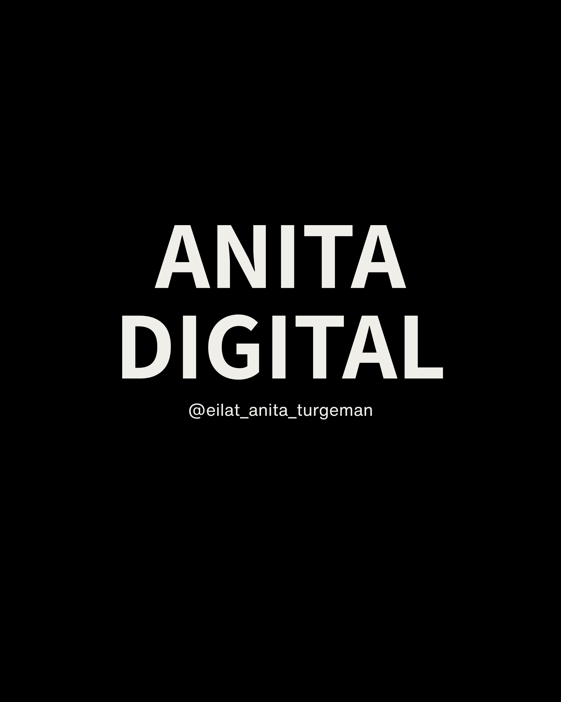

Anita Digital · @eilat_anita_turgeman
מדריך שלב אחר שלב ליצירת קרוסלה אינסטגרם שנראית כמו תמונה אחת בתנועה
כלים שנדרשים: ChatGPT (יצירת תמונה) · Kling 3 (הנפשה) · CapCut (עריכה וחיתוך)
התוצאה: שתי שקופיות שנוצרו מאותו סרטון — מעבר חלק ורציף שעוצר את הגלילה.
השלבים
פתחי את ChatGPT, העלי תמונה של הדמות שרצית להשתמש בה והוספי פרומפט מפורט. המטרה — תמונה אחת רחבה שתיראה טוב גם אחרי חיתוך לשתי שקופיות. השתמשי בפרומפט מטה.
העלי את התמונה שיצרת ל-Kling 3. בקשי מהפרפרים לנוע בעדינות — הדמות נשארת ללא תנועה לחלוטין. רק הפרפרים מתעופפים. שמרי את הסרטון בסיום.
פתחי את הסרטון ב-CapCut. בחרי יחס 3:4, הגדילי מעט והזזי לצד אחד כך שיוצג החצי הראשון. הוספי טקסט, הנפשה ושמרי.
פרויקט חדש, אותו סרטון, יחס 3:4 — הפעם הזזי לצד השני. הוספי טקסט שונה ושמרי.
העלי את שני הסרטונים כקרוסלה רגילה. בגלל שנוצרו מאותו סרטון, המעבר ביניהן חלק לחלוטין — אפקט שעוצר גלילה.
הפרומפטים שלי — להעתקה
Create a seamless Instagram carousel from two 3:4 square slides in a uniform 3:2 layout Very important: this is one continuous image without seams, frames and dividers, which will then be cut in the center into two square slides and without any text at all!! Style: Luxury journalistic, premium infographics, modern Instagram design, high readability, expensive minimalist presentation. Background - white studio In the center of the composition stands a beautiful girl (reference attached). The girl is located slightly to the left of the center and looks to the side. Around the girl, small ultra-realistic pink-white butterflies are randomly hovering. Some of the butterflies are in front of the girl, some behind her. Some butterflies cross the border between the slides, creating a depth effect and seamless connection. The butterflies are of different sizes, some are very large and close to the camera. The butterflies create the main visual focus and connect the two parts of the carousel. Ultra-realistic photography, luxury journalistic design, cinematic lighting, architectural stone background, floating pink and white butterflies, depth of field, premium typography, seamless carousel, one continuous image, no frames, no dividers, sharp focus, viral Instagram carousel.
Static camera. Fix the composition completely. The girl remains completely still, as in the picture. Do not move her face, eyes, hair, clothes, body, and bag. All text, letters, arrows, icons, nickname, save icon, and all graphic elements must remain 100% unchanged. Do not animate, move, distort, replace, or create new text. Do not add new letters, words, symbols, or interface elements. The text is a static, fixed layer. Only the butterflies move. The butterflies slowly and smoothly float in the air with realistic animation. Some butterflies fly in front of the girl, some behind her. Some butterflies fly in front of the text, others behind it, creating a natural depth and parallax effect. Smooth wing movements, light motion paths, a feeling of weightlessness. Maintain the appearance, color, and size of each butterfly. The architecture, floor, walls, lighting, and all the backgrounds remain completely motionless.
דגשים חשובים
את התמונה שתעלי לצ'אט — זאת התמונה שה-AI ישתמש בה. מומלץ לעלות תמונה שמייצגת אותך, אפילו כזו שיצרת בבינה מלאכותית.
אפשר לשנות את הפרפרים לכל צבע שתרצי, או להחליף אותם לאלמנט אחר לגמרי. מומלץ לתרגם את הפרומפט לעברית ולשנות.
ודאי שהיחס הוא 3:4 בשני הפרויקטים. חשוב שהאזור שנחתך יהיה בדיוק ממרכז הסרטון לכל כיוון.
אפשר לשנות גם את הרקע לכל צבע שתבחרי — ממליצה לציין את הצבע בפרומפט המקורי.
אני משתפת באופן קבוע טרנדים, כלים ורעיונות חדשים בבינה מלאכותית — הרבה לפני שהם מגיעים לפיד של כולם. כך תהיי בין הראשונות להכיר את הדברים שבאמת עובדים.
עקבי אחרי באינסטגרם